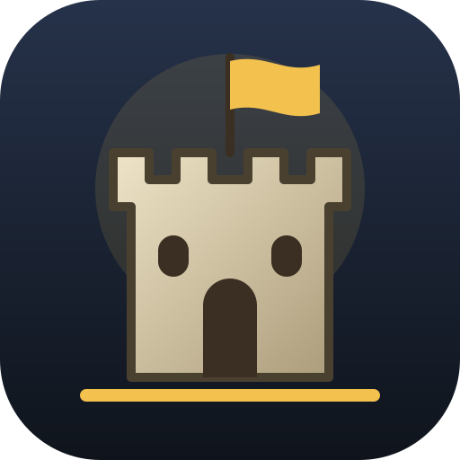

Dieser Browser erlaubt gerade kein dauerhaftes Speichern – Fortschritt geht beim Schließen verloren.
Werbefrei · ohne Konto · ohne Tracking · Spielstände bleiben auf deinem Gerät
Towerfall braucht JavaScript.